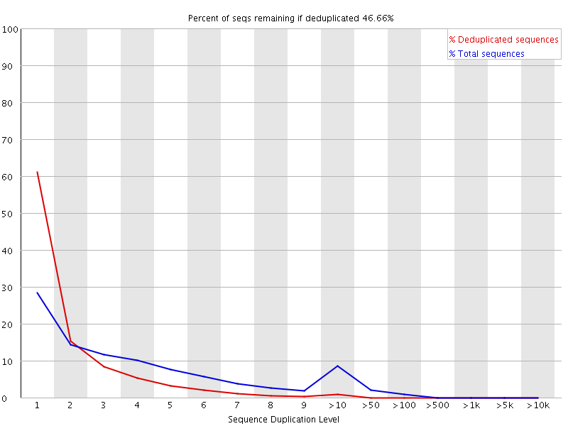

In a diverse library most sequences will occur only once in the final set. A slightly elevated level of duplication may indicate a very high level of coverage of the target sequence, but a high level of duplication is more likely to indicate some kind of enrichment bias (eg PCR over amplification).
This module counts the degree of duplication for every sequence in a library and creates a plot showing the relative number of sequences with different degrees of duplication.

To cut down on the memory requirements for this module only sequences which first appear in the first 100,000 sequences in each file are analysed, and these are then tracked through the entire dataset. This should be enough to get a good impression for the duplication levels in the whole file. Each sequence is tracked to the end of the file to give a representative count of the overall duplication level. To cut down on the amount of information in the final plot any sequences with more than 10 duplicates are placed into grouped bins to give a clear impression of the overall duplication level without having to show each individual duplication value.
Because the duplication detection requires an exact sequence match over the whole length of the sequence, any reads over 50bp in length are truncated to 50bp for the purposes of this analysis. Even so, longer reads are more likely to contain sequencing errors which will artificially increase the observed diversity and will tend to underrepresent highly duplicated sequences.
The plot shows the proportion of the library which is made up of sequences in each of the different duplication level bins. The x axis is the degree of duplication, and the y axis shows the proportion of the library which is made up of reads with that level of duplication.
In a properly diverse library most sequences should fall into the far left of the plot . A general level of enrichment, indicating broad oversequencing in the library will tend to flatten the line, lowering the low end and generally raising other categories. More specific enrichments of subsets, or the presence of low complexity contaminants will tend to produce spikes towards the right of the plot.
The module also calculates an expected overall loss of sequence were the library to be deduplicated. This headline figure is shown at the top of the plot and gives a reasonable impression of the potential overall level of loss.
This module will issue a warning if non-unique sequences make up more than 30% of the total.
This module will issue a error if non-unique sequences make up more than 50% of the total.
The underlying assumption of this module is of a diverse unenriched library. Any deviation from this assumption will naturally generate duplicates and can lead to warnings or errors from this module.
In general there are two potential types of duplicate in a library, technical duplicates arising from PCR artefacts, or biological duplicates which are natural collisions where different copies of exactly the same sequence are randomly selected. From a sequence level there is no way to distinguish between these two types and both will be reported as duplicates here.
A warning or error in this module is simply a statement that you have exhausted the diversity in at least part of your library and are re-sequencing the same sequences. In a supposedly diverse library this would suggest that the diversity has been partially or completely exhausted and that you are therefore wasting sequencing capacity. However in some library types you will naturally tend to over-sequence parts of the library and therefore generate duplication and will therefore expect to see warnings or error from this module.
In RNA-Seq libraries sequences from different transcripts will be present at wildly different levels in the starting population. In order to be able to observe lowly expressed transcripts it is therefore common to greatly over-sequence high expressed transcripts, and this will potentially create large set of duplicates. This will result in high overall duplication in this test, and will often produce peaks in the higher duplication bins. This duplication will come from physically connected regions, and an examination of the distribution of duplicates in a specific genomic region will allow the distinction between over-sequencing and general technical duplication, but these distinctions are not possible from raw fastq files. A similar situation can arise in highly enriched ChIP-Seq libraries although the duplication there is less pronounced. Finally, if you have a library where the sequence start points are constrained (a library constructed around restriction sites for example, or an unfragmented small RNA library) then the constrained start sites will generate huge dupliction levels which should not be treated as a problem, nor removed by deduplication. In these types of library you should consider using a system such as random barcoding to allow the distinction of technical and biological duplicates.